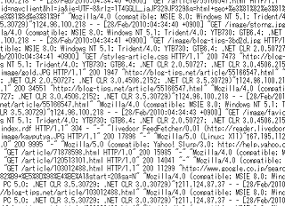

生ログの見方とアクセス解析の方法
レンタルサーバー側でアクセスログを保存しておくと、そのデータをダウンロードして詳細なアクセス解析をすることができます。
ツールなどで加工された統計データに対して、それらのデータは一般的に生ログといわれています。
おおまかな統計データを解析するには、アナリティクスなどの一般的なアクセス解析で十分かと思いますが、訪問者の足取りを詳細につかむには生ログを閲覧するのが便利です。
生ログはただのテキストデータですので、そのままダウンロードして「.log」などのファイル名に変更すると、メモ帳などでも簡単に閲覧することができます。

ログデータ自体はシンプルな形式の単純な繰り返しとなっており、訪問者のipアドレスや訪問日時、アクセスしたページや参照元のサイト、検索クエリ、ブラウザ情報などが記録されています。
アクセスログのひとつひとつはシンプルなものですが、検索ロボットなどのアクセスも記録されますし、画像読み込みの際のアクセスも逐一記録されるので、結果的に膨大な量になりがちです。
この膨大な量のデータのなかから、特定のアクセスだけの詳細を知りたい場合などは、メモ帳の編集についている「検索」機能で調べていくと便利です。
同一のipアドレスを上から検索機能で調べていくと、どこのページに何というキーワードでランディングして、どのくらいの時間閲覧し、どこのページに移動したのかの訪問経路をつかむことができます。
例えば、AというIPアドレスの人のトップページへのアクセスが１２時に記録され、１２時５分には同じAというIPアドレスで、about.htmlページへのアクセスが記録されていたとしたら、その人のトップページの閲覧時間は５分です。
そのあと、AというIPアドレスの人の記録がなかったら、about.htmlページから他のサイトへ移動したか、ブラウザを閉じたという風に判断します。
アクセスの多いページなどで、自分ではこちらのページを閲覧して欲しいけれども、実際は違うページへのリンクが頻繁にクリックされていたとしたら、素直にそちらのページへのリンクを目立つ位置に配置するように修正すると、ページビューやアクセスアップにもつながっていくものと思います。
検索クエリについては、例えばグーグルの場合、「http://www.google.co.jp/search?hl=ごにょごにょ」となっている箇所をブラウザに貼り付ければ確認することができます。
また、リスティング広告か、通常の検索結果からのアクセスかも生ログで確認することができます。
ヤフーのオーバーチュア広告の場合、管理画面の「アカウント管理 - トラッキングURL」の箇所で設定すると分かるようになりますが、アドワーズの場合、見分けるのが多少難しいようです。
わたしは「gclid」でログを検索して判断していますが、サイトによっては設定が多少異なるかもしれません。
リスティング広告をアフィリエイトで利用している場合は、効果の高い検索キーワードを検証するためにも、生ログでアクセス解析をすることをおすすめします。